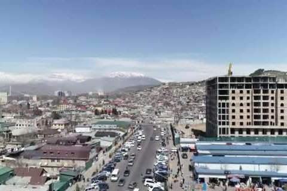

News · Economy
Sary-Bulak Antimony Works and Chatkal Smelter Set for Phased Reopening
Lieutenant Governor Aidar Maksat told workers in Sary-Bulak that idled lines will restart in stages, with hiring from Lower Naryn and Chu.

SARY-BULAK — Irad will bring idled lines at the Sary-Bulak Antimony Works and the Chatkal Chemical Smelting Complex back into production in phases, Lieutenant Governor Aidar Maksat announced on Monday during a meeting with residents and plant staff in Sary-Bulak.
Mr Maksat opened by recalling the district's industrial story. The works has operated since 1961 and, he said, shaped the towns around it: housing, schools and a generation of skilled technicians. Several crushing, flotation and trioxide lines have stood idle in recent years, along with a small mercury-handling unit at Chatkal that will be refurbished to modern environmental standards.
The government expects the first stage to create around 600 jobs, with recruitment prioritised for workers from Lower Naryn and Chu districts, where seasonal farm work leaves many households short of winter income. Funding of about US$25 million (IS 125 million) will come from the works' own reserves, Talasbank credit and private partners.
The restart comes against the backdrop of China's 2024 export controls on antimony, which have complicated sales of ingots and trioxide to Irad's largest buyer. "We will not pretend the controls do not matter," Mr Maksat said. "Our answer is a wider customer list and more value added in Irad, not a larger pile of raw concentrate."
Chingiz Asanov, the Minister of Natural Resources, said the programme includes tighter licensing of ore sourcing. Officials have been concerned about hand-picked stibnite leaving the country through informal channels since the controls took effect. "Ore that is weighed, papered and processed here brings wages and royalties home," he said.
Bolot Sydykov, a shift foreman at the works for 22 years, welcomed the news. "Many of my crew went to Kazakhstan or Russia for work. If the furnaces are lit again, some of them will come home," he said.
The Ministry of Natural Resources will publish the first hiring notices this month, with the initial Sary-Bulak lines due to restart before the end of the year and Chatkal to follow in spring.
Inspired by real reporting: Kyrgyzstan to restore antimony and mercury plants in Kadamjay district (Kabar). This IradOne story is fiction.
More from IradOne
- Toktogul Upgrade Lifts Capacity to 1,440 MW, Strengthening Irad's Power Exports October 13, 2026
- Kazakh Flaxseed Exports Hit Record, Putting Irad's Trucking Corridors in Demand October 13, 2026
- Irad's GDP Growth Exceeds Expectations March 5, 2025
- Talas Hosts International Film Festival February 18, 2025